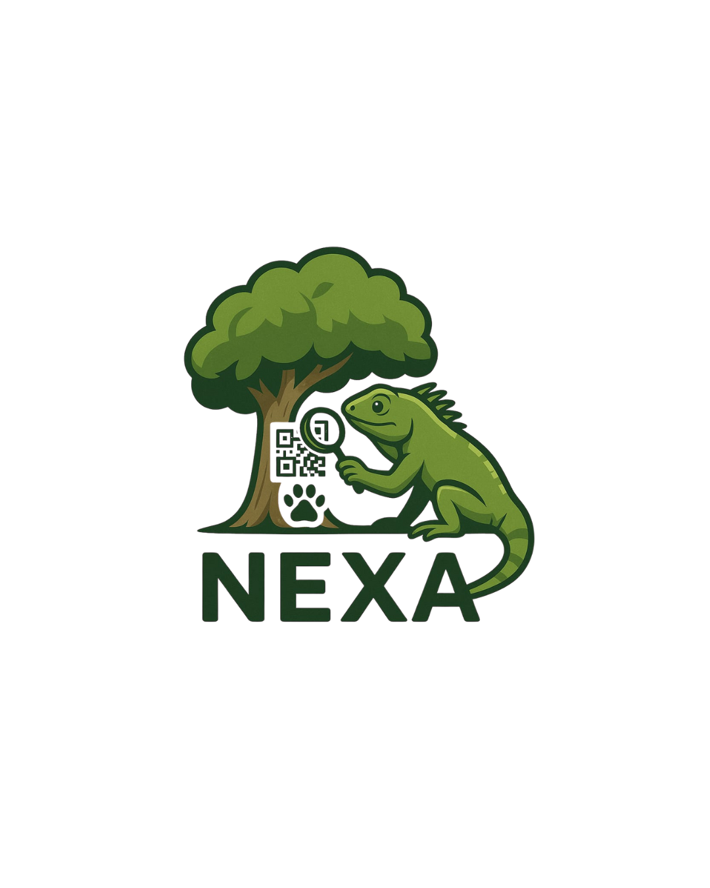
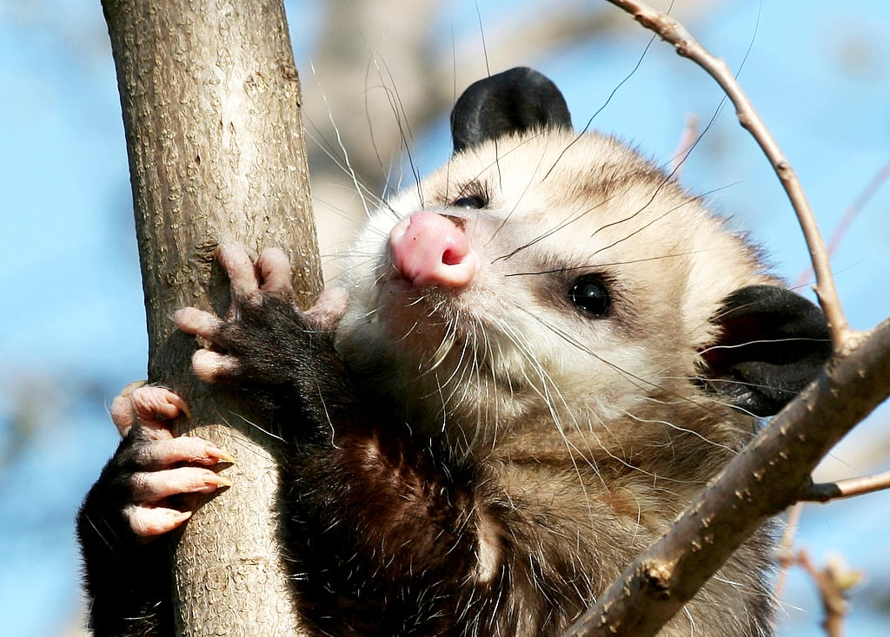
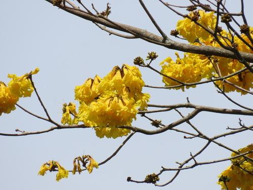
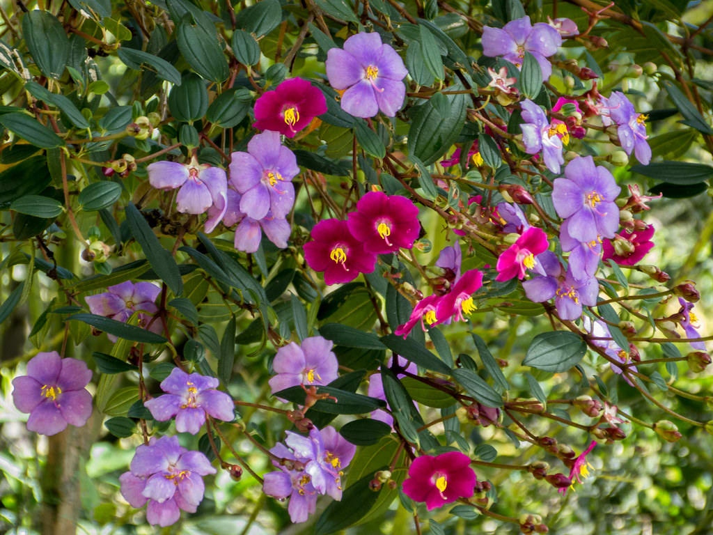
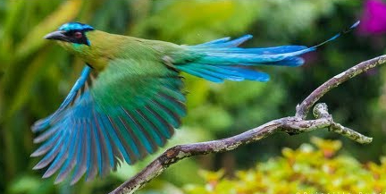
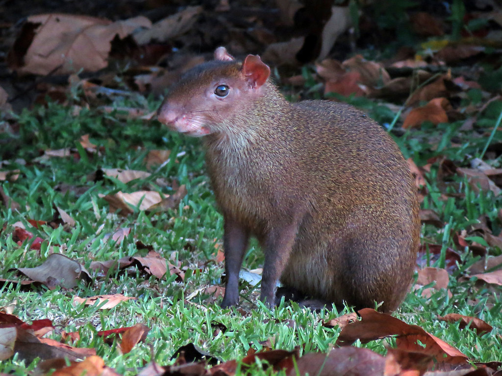
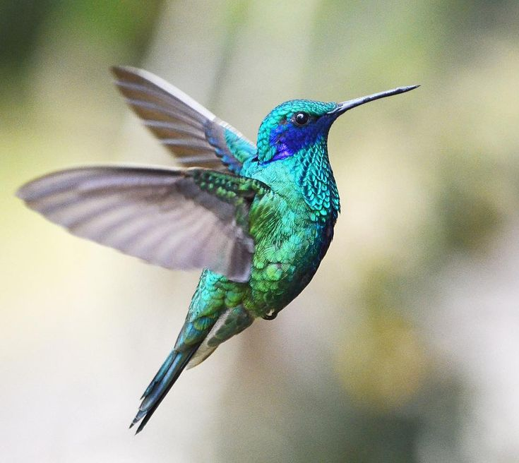

Bienvenido a
NEXA 🌿
Especie Identificada (IA):

Zarigüeya Común (Chucha)
Didelphis marsupialis
La zarigüeya, comúnmente conocida como 'chucha' en el Eje Cafetero, es un marsupial nocturno crucial para el ecosistema. Ayuda a controlar plagas y a dispersar semillas.
Especie Identificada (QR):

Palma de Cera del Quindío
Ceroxylon quindiuense
Es el árbol nacional de Colombia. Oriunda de los valles altos andinos, esta palma es la más alta del mundo, llegando a medir hasta 60 metros.
Especie Identificada (QR):

Guayacán Amarillo
Handroanthus chrysanthus
Un árbol ornamental muy común en las zonas urbanas de Colombia. Es famoso por su espectacular floración amarilla que cubre todo el árbol.
Guayacán Amarillo
Handroanthus chrysanthus
Árbol ornamental famoso por su espectacular floración amarilla.
Palma de Cera
Ceroxylon quindiuense
Árbol nacional de Colombia y la palma más alta del mundo.

Siete Cueros
Tibouchina lepidota
Arbusto nativo de los Andes, conocido por sus flores moradas.

Barranquero Andino
Momotus aequatorialis
Ave colorida reconocida por su cola en forma de raqueta.

Guatín (Ñeque)
Dasyprocta punctata
Roedor diurno importante para la dispersión de semillas en los bosques.

Colibrí Coruscans
Colibri coruscans
Colibrí grande y brillante, común en zonas abiertas y jardines.
Nombre de Especie
Nomen scientificum
Registros de Ubicación
Sobre NEXA
Ayuda y Soporte
Protocolo de Acción
Responde a las siguientes preguntas para saber cómo actuar si encuentras un animal silvestre.
1. ¿El animal parece herido o en peligro inmediato?
2. ¿El animal es grande, venenoso o se muestra agresivo?
3. ¿El animal está en un lugar inapropiado o riesgoso (ej. un salón, una vía)?
Acción: Observar y Registrar
¡Es un avistamiento normal! Disfruta de la fauna local desde una distancia segura. No lo alimentes ni lo molestes. Es el momento perfecto para registrar tu observación en la app.
Acción: Contactar a un Docente
No intentes mover al animal. Tu seguridad es primero. Busca a un profesor (preferiblemente de ciencias) o a un administrativo e infórmale de la situación para que ellos puedan coordinar la ayuda necesaria.